Logo - Design Zest
I began making moodbards and made 3 to show to set the type of vibe that the logo should have. In the picture the first is the stylescape with the colour palette • Yellow – for zest, joy, innovation. • Navy blue – for stability and professionalism. • White and beige – for clean and minimal backgrounds., and typography • Bold sans-serif for clarity and impact. • Elegant serif for a refined contrast.. The first top moodboard show freshness and is more simple, the second one nect to it shows more boldness and freedom and the third one is shhowing more our creative side, modern, bright colours.

After coming up with a name for our group I decided to do a logo that is unique and is showing off the "zest" part I looked at logos on pinterest and come up with the idea to make the "z" look like a lemon, make logos woth different shapes to be more simple, or include basically a halt lemon in our logo
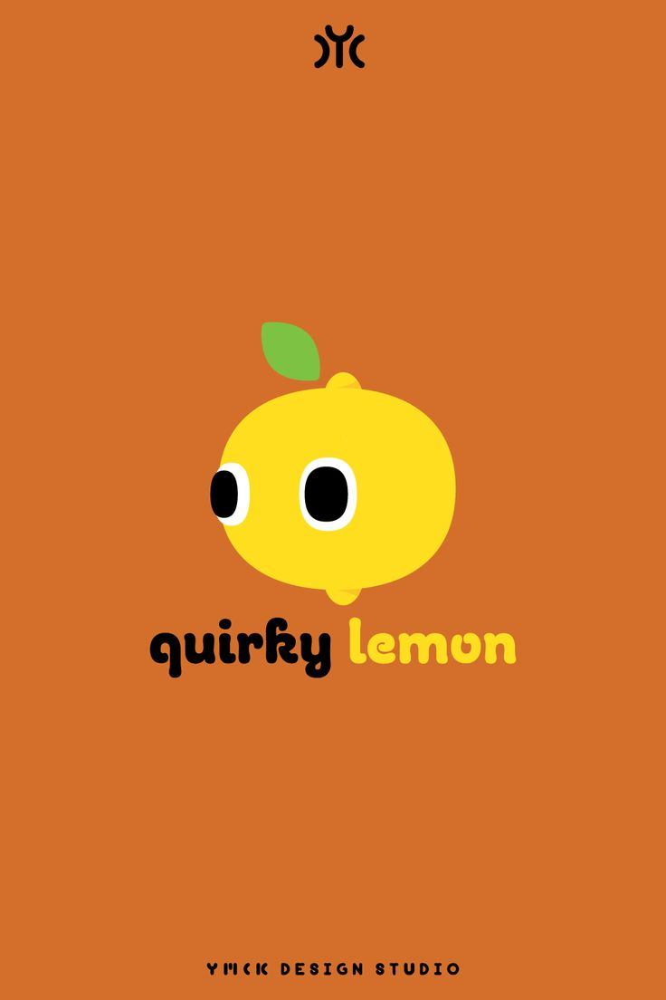

 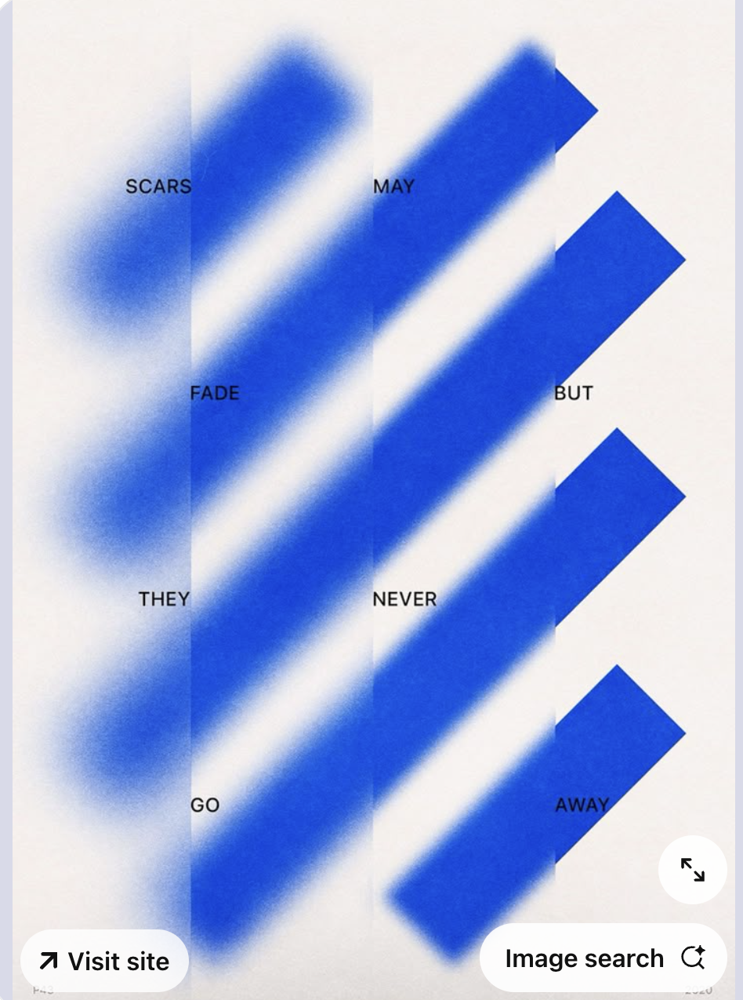
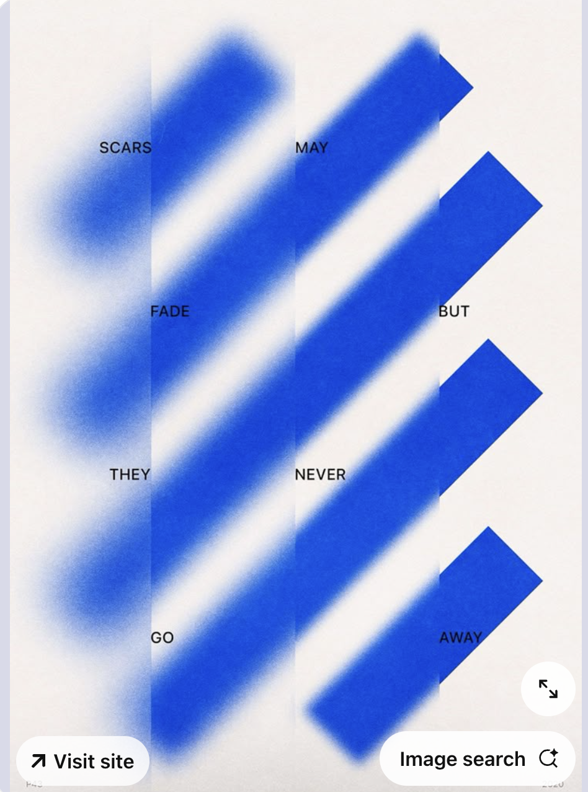
This is the logo that I had in mind and wanted to do at first, its a lemon peel in the form of "Z".

I asked Dirk on my logo design and he told me that is too detailed and better make more research on how the nowadays logos look like, he told me also to visualize how it will look in every possible size. Because the logo I created at first when I put in a website it will be small and the details wont be noticable, that will represent more of a "bad design choice"
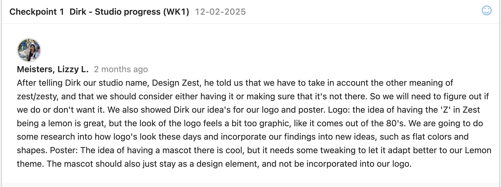After the feedback I decided to create more simple logos, something with squares, circles etc. I did a research more in deep and then saw one of my old photos inspirations from pinterest and then i got the idea to place yellow stripes with a form of a lemon and the darker coloured stripes will be the zester, additionally I desided to put the name of the group below the stripes as well, it turned out simple and pretty but I didn't know if people will notice that this is a lemon or if they will recognize our group, so i asked Mikael for a feedback and without having to exmplain he went for that logo and told me that he actually sees the lemo and the zester. The other logos in my opinion were still too detailed or not so representable of the name "design zest". See the logos here
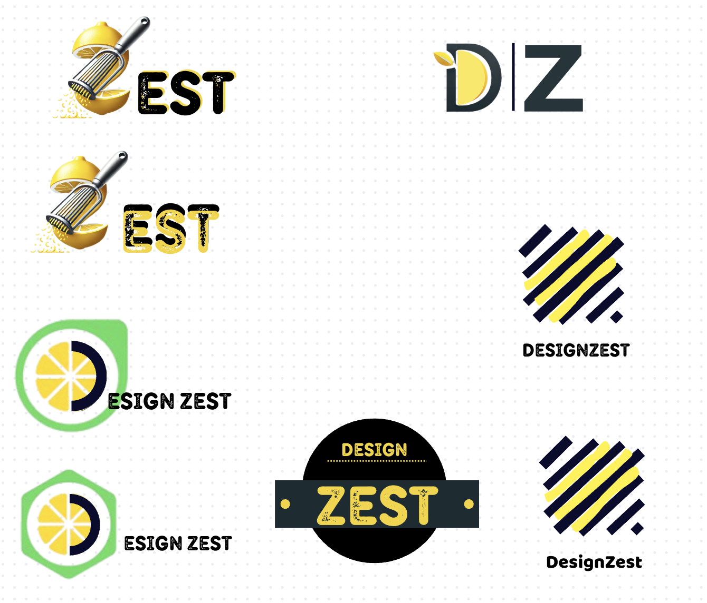
I realized that not everything needs to be chaotic and to have a lot of details, its important most of the times to have a simple design that a big group of audience can undestand by just looking at it, having feedbacks for iterations also are a big role in making a product
Posters
For the first poster, I wanted to create something that reflects our group’s creativity, style, and the way we work together. I was inspired by poster designs I saw on Pinterest—some were simple and fresh, others were more detailed—and I liked the idea of combining both approaches.
The house in the middle represents our team, like a family, all under one roof. I made the roof look like a lemon to connect with our brand, Design Zest, and to show that our ideas are full of flavor and originality. The house is floating in space, surrounded by lemon slices, which stand for our ideas going beyond limits—outside the universe, outside the box.
The slogan “Squeeze the Universe, Design Beyond” ties it all together. It shows how we take inspiration from everywhere and turn it into something bold and unique. Overall, the poster is meant to be fun, eye-catching, and a true reflection of how we work as a team.
For the second one, I wanted to go for a more minimal and fresh look that still connects strongly to our brand Design Zest. I called it "Lemon Space", tying into our concept of creativity that goes beyond boundaries. The scattered lemon slices represent our energetic and bold ideas—bright, sharp, and full of flavor.
The white background and soft yellow tones keep it clean and modern, letting the lemons and text stand out. I added a short message that reflects who we are as a team—creative, passionate, and always ready to bring something new to the table.
This poster is meant to feel light but still powerful. It’s like a visual "squeeze" of our identity—zesty, bold, and full of positive energy.


This is a template to help you analyze sources in your research and reflect on what you've read for your portfolio.

Website Design – wireframe
For the website wireframe I started immediately and didn't see the websites, I did competitive analysis later on but because I didn't have much time to prototype I started with coding the website and also doing quick wireframeSee the figma here
Portfolio
My portfolio I want to have more playful and creative design, i really like pastel colours, recently Ive got really into labubus and mystery boxes also i have always love hello kitty and all the ohter charactes, but I also wanted my design to show the educational part also as long with technology theme. That's why I decided to do a research and get inspirations on a portfolio with e desktop design and I saw a lot actually and saved all the pictures and designs I like.
 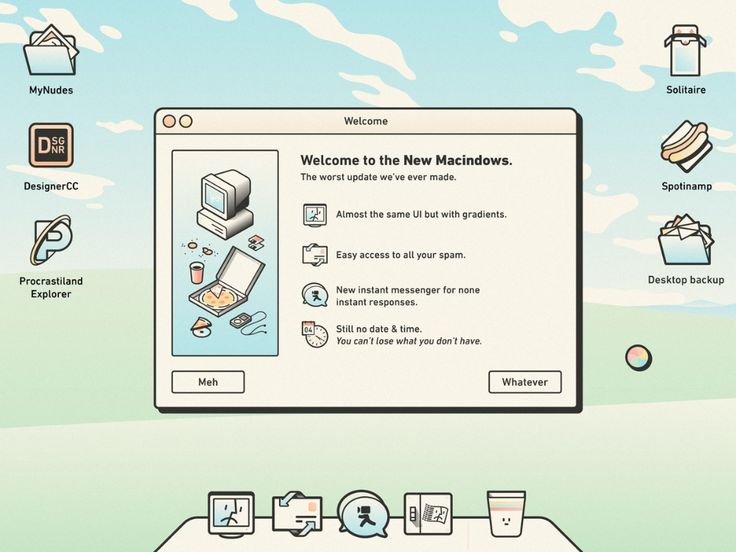
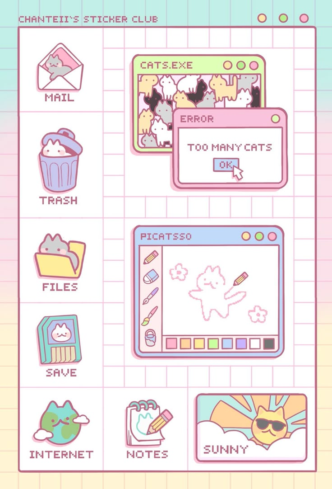
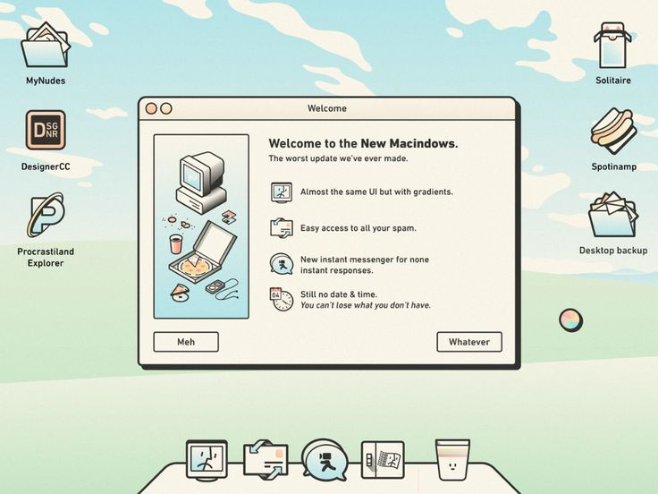
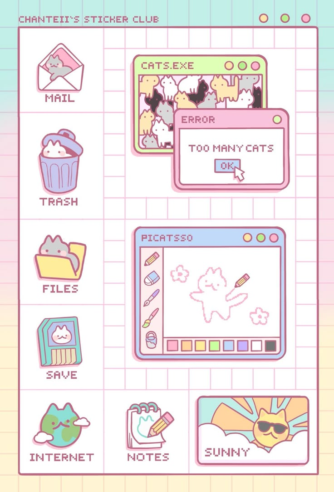
 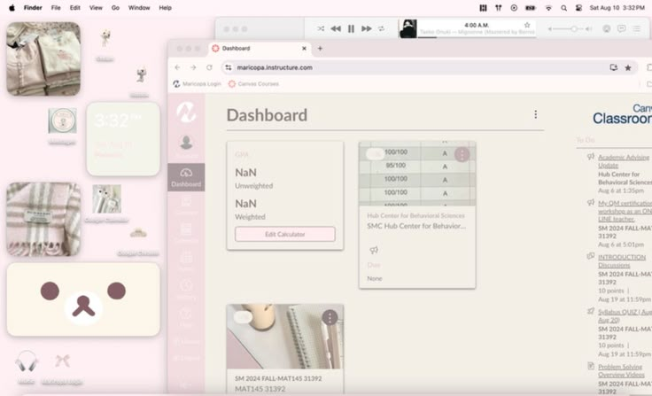
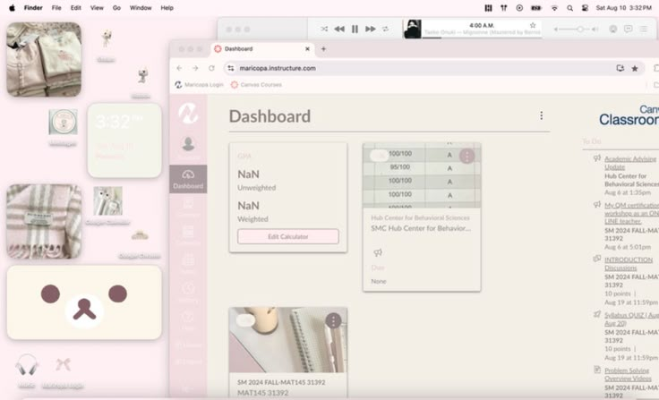
For the designing part I had so much inspirations that i didn't know with what to go, but my first choice was more retro theme design and I was making in photoshp customize folders and icons and then made the first page with a vibe of "old computer" but then I didn't know how I will exactly show my learning outcomes and was searching of a way, i also wanted my now design to be more different than my previous ones. So finally I got the idea to mimic Canvas, Canvas has a good structure and after visualizing it I thought it will be a good idea. i start looking for colours and at the end I decided to go with pink (cherry blossom wise) as its an asian tree. I wanted to mimic it not so exactly but then i received a feedback from Mikael.Canva prototype
The feedback says that if i mimic something i need to really make sure the user know how to use it if i make it too complicated my teachers might dont know exactly how it works because they will see its canvas theme and will think it will work exactly like canvas. So I changed my prototype and decided to make it look more like canvas.
 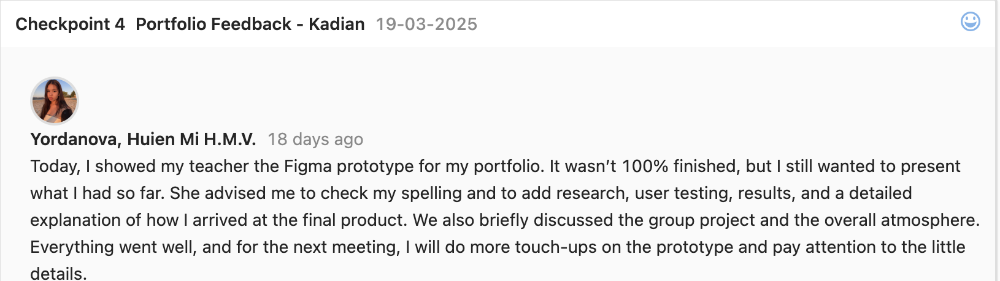
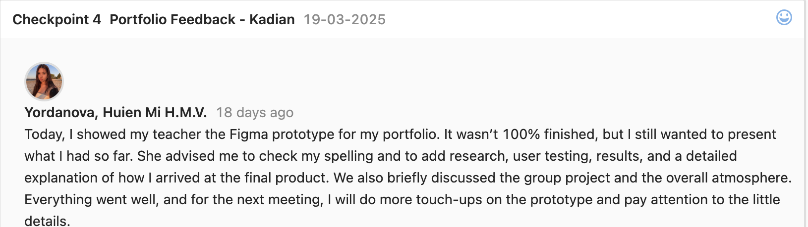
My not so final product is available in githubClick here
After Effects
Started drawing the logo in Adobe Illustrator each stripe on different layer so that later on I can animate it in after effects, used some effects from the tool to make it look like there is a zest falling also added a background that is going to match more in future, still in process. Showed it to the teachers and present it and got some feedback that will be implemented soon.Also the file was too big to upload in github so I compressed it thats why there is a watermark
Persona
These personas help me understand who I’m designing for. Amara and Luca are two types of users who want meaningful, low-pressure digital interactions. Their goals, behaviors, and frustrations guide my design decisions, so the app actually solves problems they face. Me and my group decided to make two personas because our target audience age gap is big so the first type will be mostly people in high school facing problems with connecting with people or having problems at home and the other type is students in university that maybe moved to another country or city and have e difficulties connecting and balancing work life, university life and their personal one.

Concept Poster
For the concept poster when i did a research online I saw that mostly people put a lot of text also in annoucment i saw that the teacher sent us a website but all this was with a lot of text something like presentation poster and when I asked my teacher Dirk he said to avoid a lot of text but to make sure still that the concept is clear, so first I did a really simple poster that i asked if its okay and my teacher said that its okay but not a lot detailed and that its not really understandable for who is the app made, so then I decided to give everyone from the group a role. hristiyan did the stylescape for the poster and also the charachter creation (which later on we didn't use because it was minimal and not really matched with the poster) Alexandru was looking for fonts and Lizzy did the insights.
I started doing the poster and put details that will be key things in our website so i basically started with the landing page prototype and then on top Lizzy came up with the name, she made the QR code that goes to her insight and I did a character customization shop that will match the poster, Lizzy also helped me to structure the poster so the first picture is with my structure and the second Lizzy's. After everything was done hristiyan and Alexandru printed the poster. Mostly the inspirations we got are from pinterest and dribble looking how the others make their concept poster.


This is a template to help you analyze sources in your research and reflect on what you've read for your portfolio.
User flow
So, this is the user flow me and Lizzy worked on, and it really helped us structure our idea better. Basically, a user flow shows all the steps a person would take when using the app — from the moment they open it to the different actions they might take, like signing up, choosing hobbies, or joining events.
Me and Lizzy used different colors to categorize each page.The reason we made a user flow before jumping into prototyping is because it gives us a clear picture of the entire experience. We get to see how everything connects, what screens we need, where users might get stuck, and even where errors might happen — like we showed with the school email error.
It also helped us think logically about the features. For example, when we added the event section, we realized it wasn’t just “make an event” — users also need to add a location, pictures, and maybe even set a max number of people. All of that came from mapping it out in the flow first.
So overall, it’s a helpful step for organizing our ideas and making sure the app is usable before we spend time designing or coding anything

Ui sheet
Lizzy decided to make a ui sheet because not everyone groum the group had the same design for their pages so we wanted everything to be consistent and thats why she made it. We got different colour palletes and later on I tested them so we can choose one for the ui sheet.

To figure out which one worked best, I tested them with a few people just to get their reactions. Most of them said that the fifth one really stood out the most — they described it as more energetic and friendly, which is the kind of vibe we wanted for the app.

Once we chose that palette, we moved on to creating the UI sheet. That’s where we started putting together all the design elements like fonts, sizes, button styles, and things like that. Having this UI sheet is helping us a lot, because it keeps everything consistent throughout the app. So, no matter what screen we’re working on, we can make sure the design feels the same — same colors, same style, same tone. It’s made the whole process feel more organized and professional, and it's easier to prototype now because we’re not making design decisions from scratch each time.

Figma prototype - night of the nerds
After creating the user flow, I began exploring different ways to design the app’s pages. I was assigned to work on everything related to the event page, home page, discount page, and quest page.To get inspiration, I looked at the latest design trends on Pinterest and Dribbble, focusing on what people are currently using and responding to.For the home page, I wanted to include all the core features of the app in one place. I also added everything important to the footer, so users wouldn’t have to scroll too much to find what they need.My goal was to make the app as user-friendly as possible, ensuring that users can quickly understand what the app offers and navigate it with ease.

To design a better high-fidelity prototype, I started by creating a low-fidelity version first. I began with the home page, following the user flow, and included all the main elements to see if the structure made sense. From there, I tested the layout by imagining it as a real app—clicking through each button and interaction in my mind to make sure all the necessary pages were present and connected. Since the first section of the homepage featured events, I continued by building out everything related to the event page. For the sake of consistency, I then reused certain elements and layouts for other pages like the discount page, ensuring a cohesive design throughout the app.Figma prototype

After completing the low-fidelity prototype, I moved on to the high-fidelity version. I used the UI sheet to ensure consistency and made sure that all icons were the appropriate size. To keep the pages visually interesting without overwhelming the user, I added decorative figures with low opacity, so they wouldn’t distract from the main content. I also carefully selected images that matched the theme and purpose of each page. This attention to detail will help make my future testing in the Figma prototype more accurate and realistic.

My group and I received a lot of valuable feedback, both as a team and individually. I personally received two individual pieces of feedback regarding my work. One of the main suggestions was to add more visual elements to the design, as it currently looks too white and simple. I plan to include more background figures or decorative elements to make the pages feel more engaging. Another suggestion was to add notification buttons, which would improve the user experience by keeping users updated about new events or messages. I also received feedback to enhance the event feature by allowing users to earn discounts—for example, offering food discounts if more people attend an event. This would serve as an incentive and encourage greater participation. Additionally, I need to make it more clear that users can join a group chat when they sign up for an event, so they can connect and interact with others beforehand—this wasn’t very clear in the current design. Another piece of feedback came from a teacher who commented on the point system. He mentioned that giving users the option to exchange points for real money might be more attractive than just using them for character customization. I explained that many people today actually enjoy customizing avatars and are willing to spend money on it. We even checked with our teacher Petra, who agreed and said she would prefer the customization option too.
Not yet done Iteration after the feedback but that will be my next step. I also plan to conduct mobile design research since we’re creating an app, and I want to make the Figma prototype more detailed and optimized for mobile use. For me, feedback is incredibly important—each suggestion helps improve the product and brings it closer to a more polished and complete version. It’s through this process that the design starts to feel more refined and well thought-out.